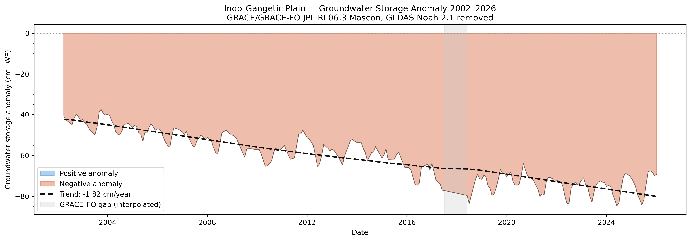
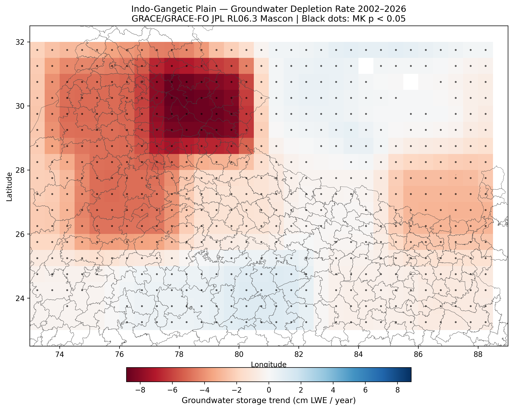

Remote Sensing · GRACE Satellite Data · Python · 2002–2026
To quantify groundwater storage depletion across the Indo-Gangetic Plain between 2002 and 2026 using NASA GRACE and GRACE-FO satellite gravity data, identify spatial hotspots of depletion at the pixel and district level, and assess the statistical significance of observed trends.
Monthly Total Water Storage anomalies were extracted from the JPL RL06.3 GRACE/GRACE-FO mascon dataset covering 2002–2026. Surface water components, soil moisture across four depth layers, snow water equivalent, and canopy water, were removed using the GLDAS Noah 2.1 land surface model, isolating the groundwater storage signal. A linear regression and Mann-Kendall non-parametric trend test were applied to each 0.5° pixel independently to produce a significance-tested depletion rate map. Results were spatially aggregated to state boundaries using the GADM Level 1 shapefile. A 251-frame animation was compiled using FFmpeg to visualise the month-by-month evolution of groundwater anomaly from April 2002 to March 2026.
The IGP is losing groundwater at an average rate of −1.82 cm LWE per year across the plain. The worst-affected zone, centred on Punjab, Haryana, and the Uttarakhand foothills between 77–80°E, shows depletion rates of up to −9 cm LWE per year. At a typical alluvial aquifer specific yield of 0.15, this corresponds to approximately 12 cm of water table decline per year in the most affected districts. 504 of 558 pixels (90%) show statistically significant depletion at p < 0.05. The seasonal oscillations in the time series reflect annual monsoon recharge, but withdrawal for rabi wheat and kharif rice irrigation consistently outpaces recovery, pushing the annual floor lower each year.
Python · GRACE/GRACE-FO JPL RL06.3 Mascon · GLDAS Noah V2.1 · Mann-Kendall Trend Test · Sen's Slope · Matplotlib
The analysis uses 251 months of aligned GRACE–GLDAS data. The GRACE/GRACE-FO instrument gap (July 2017 – May 2018) was filled using linear interpolation across the bridge period. No scale factor correction was applied to the mascon product as the IGP region has a near-unity mean scale factor (0.98), making correction negligible for inland analysis.
Monthly evolution of groundwater storage anomaly across the plain, 2002–2026.
Regional average groundwater storage anomaly over time, with a dashed trend line showing the −1.82 cm/year decline. The grey shaded band marks the GRACE–GRACE-FO data gap, which was interpolated.

Groundwater storage trend (cm LWE/year) across the Indo-Gangetic Plain. Red indicates depletion; blue indicates gain. Black dots mark statistically significant trends (MK p < 0.05).
